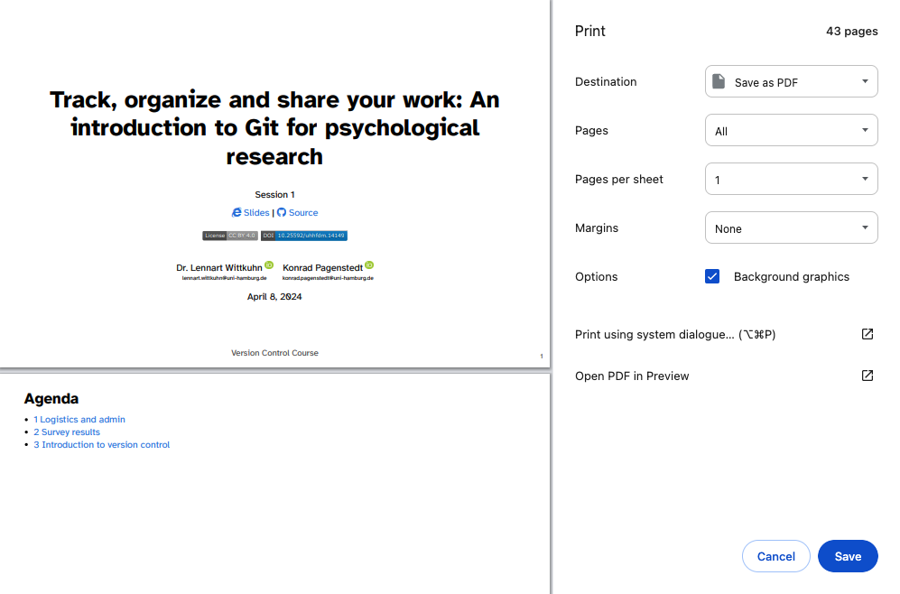

| Command | Description |
|---|---|
git config |
Get an overview of Git config commands |
git config --global "user.name" |
Sets Git username |
git config --global "user.email" |
Sets Git email address |
git config --global core.editor "editorname" |
Sets Git text editor |
git config --global init.defaultBranch main |
Sets default branch name to main |
git config --list |
Views set Git configurations |
First steps with Git
Session 03
This session
In this session, you will work on the following tasks:
- Reading: Read the chapter(s) “Setup” and “First steps with Git” in the Version Control Book.
- Implementation: Try out the commands in the chapter.
- Exercises: Work on the exercises for the
city-guideproject. - Quiz: Test your knowledge with the quiz.
As always:
- Try out the commands of this session and play around with them.
- Check whether you have achieved the learning objectives.
- Ask questions!
- Let’s git started!
Learning objectives
Setup
💡 You know how to set up Git for the first time
💡 You have set up Git on your computer
💡 You understand the difference between the three Git configuration levels
💡 You know how to configure your username and email address in Git
💡 You have set up your preferred text editor when working with Git
💡 You can escape the command-line text editor Vim
First steps with Git
💡 You can initialize a Git repository
💡 You can stage and commit changes
city-guide project
At the end of this session, you should have accomplished the following:
- You set up Git.
- You initialized your
city-guidefolder as a Git repository. - You committed your first file to the
city-guiderepository.
Please keep the city-guide folder! We will continue to use it in the following sessions.
Exercises
Configure Git
- If needed, navigate into the project folder using the command line.
- Set your Git username.
- Set your Git email address.
- Change the default name of the initial branch to
main - 🚀 Optional: Change your default text editor.
- List the Git configuration settings.
Initialize a Git repository
- If needed, navigate to the project folder using the command line.
- Initialize a new Git repository in the project folder.
Add content and commit changes
- Create a new text file and name it appropriately.
- Add a short entry to the text file (any favorite or an intriguing AI-generated one).
- Stage the new file.
- Commit the changes in the text file with a descriptive commit message.
🚀 Optional: Commit at least three additional changes in your new file.
Slides
How can I download the slides as PDF?
To print the slides to PDF, do the following:
- Toggle into Print View using the E key (or using the Navigation Menu).
- Open the in-browser print dialog (CTRL/CMD+P).
- Change the Destination setting to Save as PDF.
- Change the Layout to Landscape.
- Change the Margins to None.
- Enable the Background graphics option.
- Click Save.
Note: This feature has been confirmed to work in Google Chrome, Chromium as well as in Firefox.
Here’s what the Chrome print dialog would look like with these settings enabled:

These instructions were copied from the Quarto documentation (MIT License) and slightly modified.
Cheatsheet
Setup
First steps with Git
| Command | Description |
|---|---|
git init |
Initializes a folder as a Git repository |
git status |
Shows Git tracking status of files in the repository |
git add |
Adds file(s) to the staging area |
git commit |
Commits staged files |
git commit -m "commit message" |
Commits staged files with a commit message |